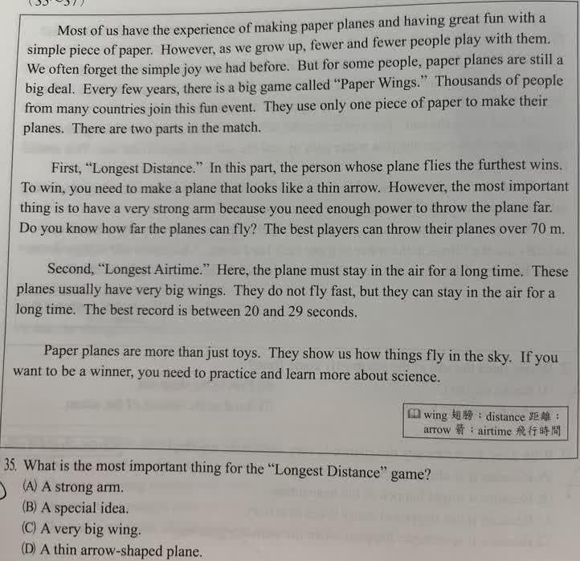

分享原卷｜第35題
完整原題
作答所需文章／材料
Most of us have the experience of making paper planes and having great fun with a simple piece of paper. However, as we grow up, fewer and fewer people play with them. We often forget the simple joy we had before. But for some people, paper planes are still a big deal. Every few years, there is a big game called “Paper Wings.” Thousands of people from many countries join this fun event. They use only one piece of paper to make their planes. There are two parts in the match. First, “Longest Distance.” In this part, the person whose plane flies the furthest wins. To win, you need to make a plane that looks like a thin arrow. However, the most important thing is to have a very strong arm because you need enough power to throw the plane far. Do you know how far the planes can fly? The best players can throw their planes over 70 m. Second, “Longest Airtime.” Here, the plane must stay in the air for a long time. These planes usually have very big wings. They do not fly fast, but they can stay in the air for a long time. The best record is between 20 and 29 seconds. Paper planes are more than just toys. They show us how things fly in the sky. If you want to be a winner, you need to practice and learn more about science. 【原卷字彙】wing 翅膀；distance 距離；arrow 箭；airtime 飛行時間。先想一想，再查看答案、解說與原圖
逐項解析
| 選項與原句 | 判讀 | 句意與判斷理由 |
|---|---|---|
| (A) A strong arm. | 應選 | 第二段明說最重要的是very strong arm，以足夠力量擲遠。 |
| (B) A special idea. | 不選 | 文章沒有把特別的想法列為最重要。 |
| (C) A very big wing. | 不選 | 大機翼是最長滯空時間項目的條件。 |
| (D) A thin arrow-shaped plane. | 不選 | 細長箭形雖有提到，However後才指出最重要的手臂力量。 |
詳細說明與解題步驟
【直接找最高級線索】
題目問 most important thing，回到第二段找相同用語。文章先說飛機要像細長的箭，接著用 However 轉折，指出最重要的是 have a very strong arm，因為需要足夠的力量把飛機擲遠，所以選A。
【其他選項】
B「特別的想法」不是文章列出的最重要條件。C「很大的機翼」出現在最長滯空時間的項目，不能套到最長距離。D「細長箭形的飛機」雖是距離賽的條件，但不是作者用 most important 指出的重點。
【全文翻譯】
我們大多有過折紙飛機的經驗，只用一張普通的紙就玩得很開心。不過，長大後，玩紙飛機的人愈來愈少，我們常忘記過去那份單純的樂趣。但對某些人來說，紙飛機仍很重要。每隔幾年會舉行名為Paper Wings的大比賽，許多國家成千上萬的人參加。他們只用一張紙做飛機，比賽分成兩個部分。
第一部分是最長距離，飛得最遠的人獲勝。要贏，需要折出像細長箭頭的飛機。不過，最重要的是強壯的手臂，因為需要足夠力量把飛機擲遠。這些飛機能飛多遠？頂尖選手可以擲出超過70公尺。
第二部分是最長滯空時間，飛機要在空中停留很久。這類飛機通常有很大的機翼，飛得不快，卻能在空中待很久。文中說最佳紀錄介於20到29秒之間。
紙飛機不只是玩具，也讓我們了解東西如何在空中飛。如果想獲勝，要多練習並多學相關科學知識。
【數字與判讀】
70公尺、20～29秒都是原文章提供的資料，本題依文章判讀，不將它們當作最新世界紀錄。兩個項目要分清：distance距離，airtime滯空時間。
核對註記：已依原卷或完整文字核對並獨立解題；對應教材課次未確認，歸綜合。
原圖（僅本題）
